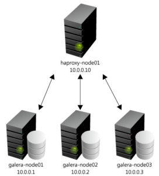
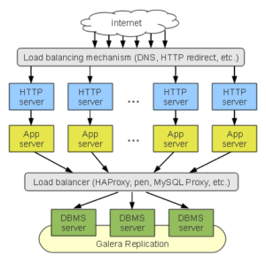

Scale-Out Database apps através de Galera Cluster e MariaDb
Publicado em 2013-11-06 11:29:00
O MariaDB é o fork da base de dados relacional MySQL de código aberto mais popular. A comunidade MariaDB tem crescido exponencialmente nos últimos anos, e esta tornou-se a BD relacional padrão em muitas distribuições Linux e tem sido activamente promovida por algumas das maiores empresas globais do mundo.
O MariaDB Galera Cluster fornece tecnologia assente em replicação síncrona multi-master. Usando o MariaDB Galera Cluster significa que seus dados estão mais seguros do que na replicação master-slave tradicional, porque estes são replicados imediatamente como parte do "commit", semqualquer atraso. Além disso, na replicação "master-slave" tradicional, só pode efectuar "scale-out" para leitura, mas com MariaDB Galera Cluster pode ler e gravar em qualquer nó. Isso torna a vida mais fácil para os programadores, porque estes não precisam de separar transações de leitura e escrita, nas transações a submeter à BD. O seu código não precisa sequer ser alterado!
As principais características do Galera Cluster são :
Não há requisitos de failover - os nós estão todos os activos e são todos "master" nodes.
As aplicações podem ler e escrever em qualquer nó do cluster galera
Escalabilidade horizontal ( scale out ), tanto para leitura como para escrita.
- Suporte de adição de novos nós on-line
- Remoção de nó de forma fácil
- Resistente a redes de alta latência, através de conexões remotas
- Sem perda de dados!
Usando um Load-Balancer
Através da implementação de um balanceador de carga opcional (ex. Pen, Pound, HaProxy, etc), as aplicações conectam-se a qualquer dos nós do cluster para as transsações requeridas . Quando a aplicação efectua um "commit", todos os dados alterados dentro da transação são movido para os outros nós do cluster Galera. A confirmação estará concluida apenas quando todos os nós tiverem recebido os dados. Desta forma, o impacto em termos de desempenho é muito limitado.
Quando se aconselha o uso do Cluster Galera :
- Aplicações de missão crítica e sem perda de dados
- 99,999% de uptime necessário
- Não há possibilidade de alterar as aplicações, optimizando-as para leitura / escrita, para suporte de topologias de master/slave.
Como recomendação para balanceamento de cargas num cluster Galera, podemos referir o HAProxy, pois trata-se de uma solução robusta, escalável, confiável e de elevado desempenho para HTTP e TCP. Na prática ele recebe as conexões dos utilizadores/aplicações e actua como um proxy, criando um canal entre o user e um dos servidores do cluster. Há benchmarks bem interessantes indicando desempenho de mais de 40 mil conexões por segundo, usando um hardware até já considerado ultrapassado e numa rede de 10Gbps.
Abaixo está um Diagrama desta implementação de "prova-de-conceito" e uma configuração de Galera Cluster, acedida por uma aplicação escrita em java e Javascript através do RAD WaveMaker, e que você pode testar no link que se segue:
Db4WaveCluster (user = demo e password = demo)
O site a que acede é confiável e está no domínio da Softelabs 
Para mais informações não hesite em contactar-nos através do e-mail info@softelabs.com
Por Francisco Gonçalves em 05 Nov 2013